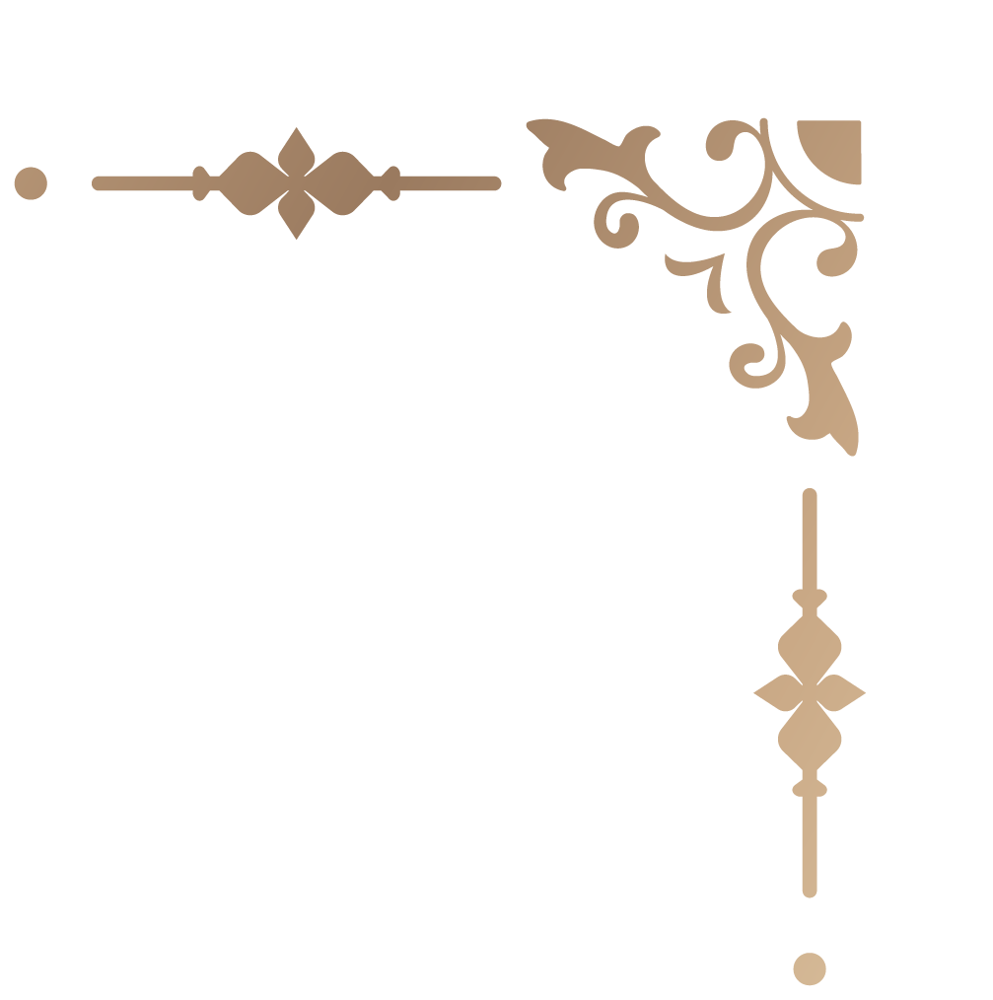

Bilder antippbar
Mit der Industrialisierung veränderte sich das Leben grundlegend: Massenproduktion und technische Fortschritte prägten den Alltag,
viele Produkte verloren jedoch an handwerklicher Qualität. Als Gegenpol entstand die Arts-and-Crafts-Bewegung, die Kunst,
Handwerk und Alltag wieder verbinden wollte. Aus ihr entwickelten sich unter anderem das Bauhaus und der Jugendstil.
Jugendstil verstand sich als Rückbesinnung auf die Natur und zeigt sich nicht nur in der Malerei, sondern auch in Design,
Architektur und Alltagsobjekten. Charakteristisch sind organische Formen,
Ornamente und die Nähe zur Natur
Der Jugendstil verstand sich als Gegenentwurf zur Industrialisierung. Als Epoche blieb er kurz, seine Formen wirken bis heute nach.
https://www.meisterdrucke.de/kunstdrucke/Alphonse-Mucha/640593/La-danse- Lithographie-Serie-von-Alphonse-Mucha,-1898.html
https://kunstnuernberg.de/gustav-klimt-kuenstler-des-jugendstils/
https://www.quittenbaum.de/de/auktionen/jugendstil-art-deco/150B/henry-van-de-veldescherrebek-kunstwebschule- armlehnstuhl-mit-bezug-fuer-den-hollaendschen-stuhl-von-henry-van-de-velde-1898-105771/
https://www.meisterdrucke.ch/kunstdrucke/Emile-Galle/855564/Eine-doppelt-%C3%BCberlagerte -und-ge%C3%A4tzte-Glas-Tischlampe.html
https://www.p55.art/de/blogs/p55-magazin/wer-war-der-katalanische-kunstler-antoni-gaudi?srslti d=AfmBOopNKATbFsZhbAwKGTJtM7mDEzLk2ZseMsR5kZNhqqMvMpey-g3Y